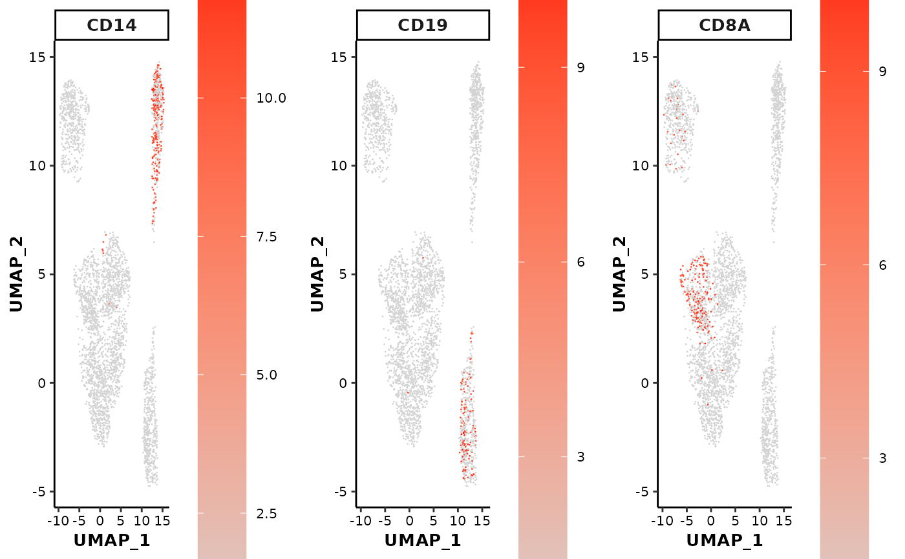

Scatter plot showing the expression or activity of selected features on UMAP or t-SNE coordinates
feature_scatterplot.RdThis function is used to draw a scatter plot of selected features on UMAP or t-SNE coordinates from a sparse eset object.
Usage
feature_scatterplot(
input_eset,
features = NULL,
location_x = "UMAP_1",
location_y = "UMAP_2",
colors = NULL,
ncol = 3,
point.size = 0.5,
legend.position = "right",
legend.key_height = 3,
legend.key_width = 1,
fontsize.legend_title = 10,
fontsize.legend_text = 8,
fontsize.strip = 10,
fontsize.axis_title = 10,
fontsize.axis_text = 8
)Arguments
- input_eset
The expression set object that filtered, normalized and log-transformed
- features
A vector of genes or drivers (row.names of the input eset) to plot
- location_x
Character, name of the column of x-axis coordinates. Default: "
UMAP_1".- location_y
Character, name of the column of y-axis coordinates. Default: "
UMAP_2".- colors
A vector of two colors indicating the low and high values respectively. Default: c("
lightgrey", "red").- ncol
Integer, number of columns when multiple plots are displayed. Default: 3.
- point.size
Numeric, size of the scatter points. Default: 0.5.
- legend.position
Character, position of legend: "
right" (the default), "left", "top", "bottom" or "none".- legend.key_height
Numeric, height of the legend key in unit of "cm". Default: 3.
- legend.key_width
Numeric, width of the legend key in unit of "cm". Default: 1.
- fontsize.legend_title
Numeric, font size of the legend title. Default: 10.
- fontsize.legend_text
Numeric, font size of the legend text. Default: 8.
- fontsize.strip
Numeric, font size of the plot strip. Default: 10.
- fontsize.axis_title
Numeric, font size of the axis label and text. Default: 10.
- fontsize.axis_text
Numeric, font size of the axis label and text. Default: 8.
Value
Print a plot to screen and return a gtable containing a list of plots, can be visualized by plot(g), and saved by ggsave(file = "output.pdf", g)
Examples
data(pbmc14k_expression.eset)
## 1. scatter plots with UMAP projections
feature_scatterplot(input_eset = pbmc14k_expression.eset,
features = c("CD14", "CD19", "CD8A"),
location_x = "UMAP_1", location_y = "UMAP_2")

## 2. scatter plots with t-SNE projections
feature_scatterplot(input_eset = pbmc14k_expression.eset,
features = c("CD14", "CD19", "CD8A"),
location_x = "tSNE_1", location_y = "tSNE_2")
#> Error in feature_scatterplot(input_eset = pbmc14k_expression.eset, features = c("CD14", "CD19", "CD8A"), location_x = "tSNE_1", location_y = "tSNE_2"): The location_x column,tSNE_1, was not found in the input set. Please check and re-try.
## 3. change the point size and font size
feature_scatterplot(input_eset = pbmc14k_expression.eset,
features = c("CD14", "CD19", "CD8A"),
location_x = "UMAP_1", location_y = "UMAP_2",
point.size = 1,
fontsize.strip = 12, fontsize.axis = 10)
#> Error in feature_scatterplot(input_eset = pbmc14k_expression.eset, features = c("CD14", "CD19", "CD8A"), location_x = "UMAP_1", location_y = "UMAP_2", point.size = 1, fontsize.strip = 12, fontsize.axis = 10): argument 7 matches multiple formal arguments